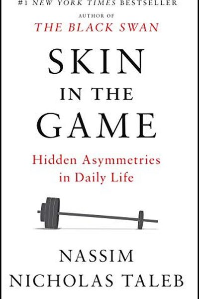

Library › Power & Strategy
Skin in the Game — Summary & Key Lessons

Hidden asymmetries in daily life — why you should only trust people who risk something.
📖 OPEN THE FULL INTERACTIVE BREAKDOWN →🌐 Read it in Hindi, Hinglish, Gujarati, Tamil & 22 more languages — free, with audio.
💡 The Big Idea
Taleb's core principle: the person who makes a decision must pay for its consequences — good or bad. When advice-givers have no skin in the game, systems rot: bankers risk other people's money, consultants give safe advice, experts make predictions without paying for being wrong. Skin in the game aligns incentives, forces honesty, and is the only reliable filter for trust. If you don't risk anything, you shouldn't get the reward — and you shouldn't be trusted.
🧠 The 6 Key Lessons
Lesson 1: The Rule: Risk, Reward, and the Same Pot
The Simplest Heuristic
The core rule: those who make decisions should share in the outcomes — upside and downside. When risk and reward are separated, the risk-taker becomes reckless and the reward-taker becomes dishonest. Alignment of incentives is not a nice-to-have; it's the structural basis of trust.
📖 Example: Executives who get bonuses for short-term wins but leave before losses arrive — and bankers who trade with depositors' money — are classic cases where no skin in the game produced disaster. Read the full example →
⚡ Do this: For every big decision you make, ask: who shares the downside? If nobody does, the decision's incentives are broken.
Lesson 2: Never Trust an Advisor Who Doesn't Risk
The Advisors
Advice is only valuable when the advisor pays for being wrong. Economists whose predictions don't affect them, consultants who collect fees regardless of outcome, and 'experts' with no exposure — all should be discounted heavily. Trust the practitioner who lives with the result.
📖 Example: Taleb's contrast: a surgeon who would operate on his own family, versus a regulator whose policies never touch his own life. The first has skin; the second doesn't. Read the full example →
⚡ Do this: Filter your advisors: who would lose something if they're wrong? Give their advice more weight; discount the rest.
Lesson 3: Symmetric, Not Asymmetric
The Symmetry of Ethics
A fair system is symmetric: the same rules apply to everyone, and those who create risk also bear it. Asymmetry — 'heads I win, tails you lose' — is the root of most institutional rot. Ethics starts with symmetry: don't do to others what you wouldn't accept yourself.
📖 Example: The banker who privatizes gains and socializes losses has asymmetric payoffs. The honest entrepreneur who risks his own savings has symmetric ones. Read the full example →
⚡ Do this: Audit one decision you make: is the downside symmetric? If not, restructure it so you share the risk you create.
Lesson 4: Skin in the Game Filters Bullshit
The Emptiness of Words
When someone truly risks something, their words change: they become concrete, humble and specific, because being wrong costs them. Talk is cheap — risk is expensive. The fastest way to tell a real commitment from a performance: does the person stand to lose something real?
📖 Example: A trader who puts his own money where his mouth is speaks differently from a pundit who only gives opinions. The first hedges less and is more honest about uncertainty. Read the full example →
⚡ Do this: Before trusting a strong opinion, ask: what does this person lose if they're wrong? Use the answer as your filter.
Lesson 5: Minorities Rule: The Dynamics of the Few
The Minority Rule
Talebi's insight: in many domains, a small minority drives the whole system. If a minority has strong preferences and is willing to pay/act on them, the majority often adapts. This explains halal/kosher food everywhere, one loud customer shaping a product, and niche standards becoming universal.
📖 Example: Airlines serve only halal/kosher meals on many routes not because most passengers demand them, but because the minority who demand them won't fly otherwise — so the minority sets the menu for everyone. Read the full example →
⚡ Do this: Look for the 'active minority' in your market or team — the small group whose preferences could set the standard. Serve them first.
Lesson 6: Live With Your Own Advice
The Last Chapter
The ultimate test: practice what you teach. If your advice would ruin you when followed, it's worthless. The most reliable people are those whose lives embody their principles — the vegetarian dietitian, the frugal finance guru, the disciplined coach. Consistency between words and risk is the highest form of credibility.
📖 Example: Taleb himself is famous for refusing to fly on airlines that have no skin in their own safety decisions — his life follows his principles, which is precisely why people listen. Read the full example →
⚡ Do this: Review your own advice: would you bet your money and reputation on it? Where the answer is no, either change the advice or the behavior.
✅ 5-Step Action Plan
- Ask 'who shares the downside?' before every big decision.
- Weight advisors by how much they risk being wrong.
- Make your risk symmetric: don't create risk you don't share.
- Filter bold opinions by the speaker's exposure.
- Live with your own advice — practice what you teach.
💬 Best Quotes from Skin in the Game
- “Don't take advice from someone who doesn't have skin in the game.”
- “The difference between a trader and a professor: the trader's mistakes hurt him.”
- “If you see fraud and don't shout fraud, you are the fraud.”
Interactive version: mark lessons as read, listen in your language, share quote cards.